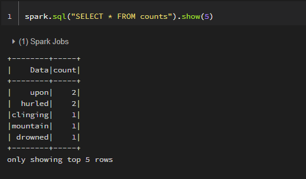

Intro
Spark Structured Streaming has always been one of the most facinating things of Spark. Wow! Analytics task which can achieve end-to-end latencies as low as 1 millisecond, I mean that is really mind blowing. This article is not regarding Spark Structure Streaming using Kafka which one can easily find in the Spark official documentation, but this is regarding secure Spark Structured Streaming using Kafka.
All the Spark Structured Streaming out there are using unsecured kafka cluster. This article is seperated into the below main subtopic:
- Secure Kafka cluster using Cloud Karafka "Duck Developer Account"
- Producer using vanila Kafka-Confluent library
- Consumer Spark Structure Streaming
- Results
Secure Kafka Cluster
- Lets use the service from Cloud Karafka for the secure cluster, we will use a Duck Developer account.
- Click Login in top right corner(you can use the avaialble login methods too.
- Input a Team Name, agree to Terms of Service and click yes or no for GDPR and click create. As we are using it for educational purpose it doesn't really matter.
- Once the dashboard renders, click on Create New Instance and follow along the procedure.
- In the Create New Instance, select a Plan (Developer Duck) and Name.
- In the Region page, select a Data center, anything is fine. Click on Review.
- In the Confirm new instance page, reviewe Data and click on Create instance.
- Instance dasboard will appear, click the name as you had given to cluster in Step 5 and details dashboard will appear.
Let's setup a topic to write to
- Click on the Details tab of the side panel.
- At the bottom of the dashboard there are Connection details.
- The CLOUDKARAFKA_USERNAME, CLOUDKARAFKA_PASSWORD will be used to connect to CLOUDKARAFKA_BROKERS. Karafka provides 3 brokers. The Topic prefix is just CLOUDKARAFKA_USERNAME followed by '-'.
- Once the dashboard renders, click on Create New Instance and follow along the procedure.
- Next lets create topic for consumer, click on the TOPICS option in slidebar. A default topic(CLOUDKARAFKA_USERNAME-default) is always present. We can also create a new one by using the following line and adding characters in the blank.
- We can test our consumer and producer using the Browser tab in the sidebar
- We first input the topic name in 'Topic' field in the consumer panel and click on Consume
- We do the same in for the Producer panel, provide input in the 'Messgae' field and clickProduce


- We are done, lets now implement the Producer .
Producer
The source code for producer can be accesed using sim-producer.py.
This is a vanila implementation using the confluent-kafka version 1.8.2 library. We require the paramerters CLOUDKARAFKA_BROKERS, CLOUDKARAFKA_USERNAME, CLOUDKARAFKA_PASSWORD, CLOUDKARAFKA_TOPIC. For information on the mentioned variable, please check out the section regarding setting up the secure cluster of Cloud Karafka and come back to this section.
We are simulating a stream of data by sending lines of a book we download. Now lets move on to the Consumer section
Consumer
 spark_databricks_consumer_nootebook.py
spark_databricks_consumer_nootebook.py
We are going to implement the consumer using Spark Structure Streaming API. We will use Databricks as the managed environment for Spark, and use python to build our DAG. We could equally use a local Spark environment to deploy our code Spark logic using the below commmand :
spark-submit --packages org.apache.spark:spark-sql-kafka-0-10_2.12:3.1.3,org.apache.kafka:kafka-clients:2.8.0 --archives BDKafka.tar.gz#environment sim_consumer.py
The BDKafka.tar.gz is the python environment with all python dependencies packed using venv-pack. The packages arguments as specified by spark-submit help is :
--packages:Comma-separated list of maven coordinates of jars to include on the driver and executor classpaths. Will search the local maven repo, then maven central and any additional remote repositories given by --repositories. The format for the coordinates should be groupId:artifactId:version.
org.apache.spark:spark-sql-kafka-0-10_2.12:3.1.3
groupId : org.apache.spark
artifactId : spark-sql-kafka-0-10_2.12 ( spark-sql-kafka version is 0.10, scala version is 2.12)
version : 3.1.3( Spark version )
For Databricks
- We need to install a library to authenticate to secure cluster. Click on compute and then click on the cluster in which you want install the library.
- Select the Libraries tab and click on Install new.
- Select the Maven tab and click on Search Package.
- In the Search field enter kafka-clients and select the latest version.
- They click on Install.
- Attach this cluster to notebook of the consumer.
Authentication Using Jaas
The Java Authentication and Authorization Service (JAAS) login configuration file is pretty much a standard when it comes to authentication, it contains one or more entries that specify authentication technologies to be used by applications. The JAAS login configuration file must include an entry specifically for the driver. In addition, the login configuration file must be referenced either by setting the java.security.auth.login.config system property or by setting up a default configuration using the Java security properties. We will be setting the java.security.auth.login.config system property in our implementation. we will set the property using
spark.sparkContext.setSystemProperty(
'java.security.auth.login.config',
'location_of_the_file')
We are going to use a JAAS patternas described below:
entry_name {
login_module flag_value module_options
};
Our implementation will use entry_name as KafkaClient, login module will be org.apache.kafka.common.security.scram.ScramLoginModule as Cloud Karafka uses SCRAM authentication and module options debug=true username=CLOUDKARAFKA_USERNAME,password=CLOUDKARAFKA_PASSWORD. If you want information on how to get values of CLOUDKARAFKA_USERNAME, CLOUDKARAFKA_PASSWORD, you can go through the section on how to setup Secure Kafka Cluster.
KafkaClient {
org.apache.kafka.common.security.scram.ScramLoginModule required
debug=true
username=CLOUDKARAFKA_USERNAME
password=CLOUDKARAFKA_PASSWORD;
};
Even though this implementation is using SCRAM authentication we can just as well use other mechanisms such as Oauth and using login_module as org.apache.kafka.common.security.oauthbearer.OAuthBearerLoginModule. Lets checkout our current Results.
Results

Our implementation was using an interupted thread i.e. we were using a UDF for removing the stop words, we had fairly good results.
Our spark jobs while streaming
Our Spark Structure Streaming Dataframe @T1
Our Spark Structure Streaming Dataframe @T2

Info
Hello Everyone, this is Aldrin Fernandes. I am a Machine Learning Engineer for a Banking client at TATA Consultancy Services. Spark is extensively being used to train Machine Learning models using exponential amounts of data in the industry. This is mainly due to Spark's MLlib, performance and it's ability to integrate with most commonly used systems like Kafka.
Since there wasn't any article or tutorial providing information regarding connecting to secure Kafka cluster, I took this opportunity to provide information on how to connect to a secure cluster. This solution can be extended to other authentication mechanisms such as Kerberos, Oauth etc.
Contact info
We can connect through email : aldrin.a.fernandes@gmail.com, use tag [sparkKafka].
Attributes
Html Template : @ajlkn
Background Image : @Nicole De Khors
Intro, Cluster, Producer, Consumer cover images : @Streamline